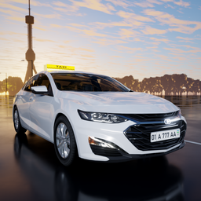
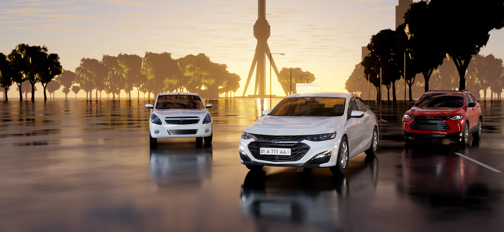
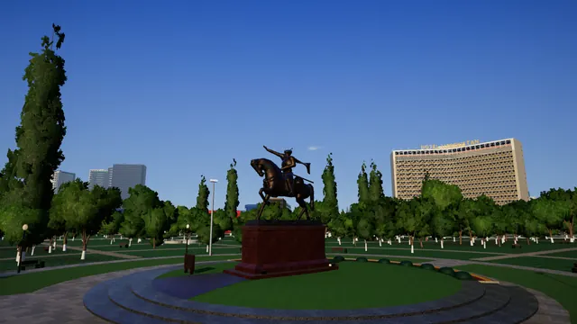
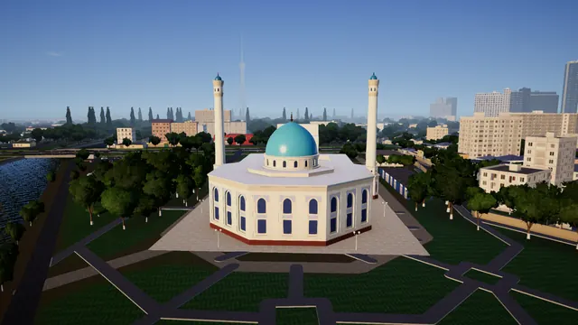
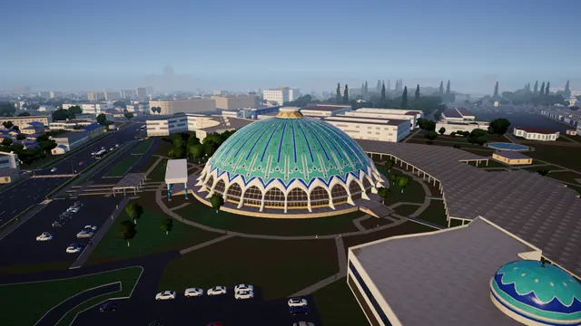
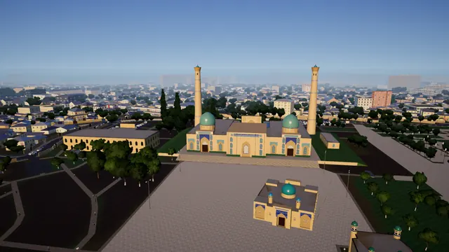
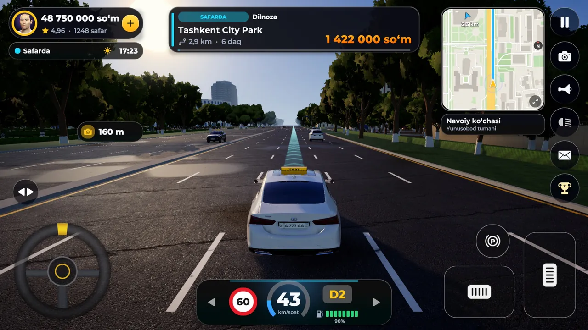
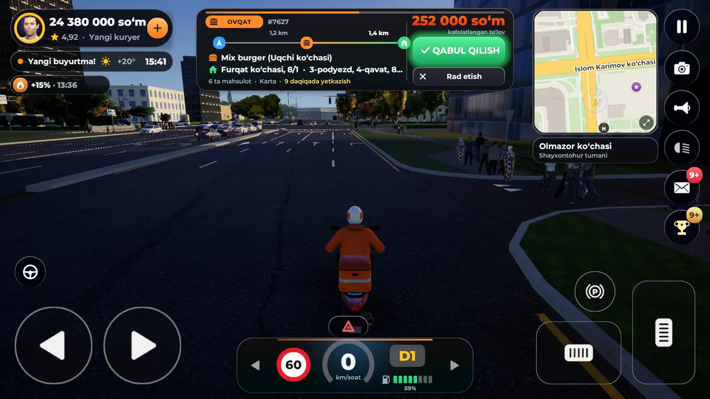
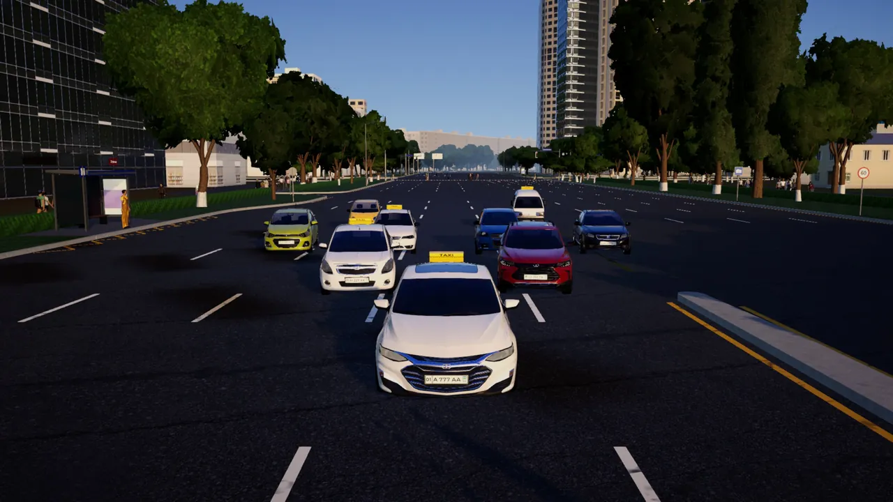

Toshkent 1:1
OpenStreetMap maʼlumotlari asosida: haqiqiy koʻchalar, koʻpriklar, mahallalar, metro bekatlari va bozorlar. Navoiy, Amir Temur, Chorsu – hammasi oʻz joyida.

Taxi Tashkent
Toshkentda taksi simulyatori
Oʻzbekistonning 15 ta shahri – Toshkent, Samarqand, Buxoro, Xiva, Fargʻona vodiysi va boshqalarning haqiqiy koʻchalarida taksi, avtobus yoki yuk mashinasi haydovchisi, kuryer boʻling: yoʻlovchi, buyurtma va yuklarni navigator bilan yetkazing, pul ishlang, prava oling va oʻnlab mashina, moto, avtobus va yuk mashinalaridan oʻzingizga yoqqanini tanlang.
Bepul · iPhone va Android · 7 til: Oʻzbekcha, Русский, English, Türkçe, Deutsch, Français, Español
Taksi haydovchisi yoki kuryerning bir kuni – birinchi buyurtmadan tungi shahargacha.
OpenStreetMap maʼlumotlari asosida: haqiqiy koʻchalar, koʻpriklar, mahallalar, metro bekatlari va bozorlar. Navoiy, Amir Temur, Chorsu – hammasi oʻz joyida.
Samarqand, Fargʻona, Namangan va Andijon ham 1:1. Vodiyga Qamchiq dovonidan – haqiqiy tunnellar va togʻ burilishlari orqali oʻtasiz. Har shaharda shaharlararo taksi bekati, narx km boʻyicha.
Buxoro, Xiva, Urganch, Nukus, Qarshi, Termiz, Navoiy, Jizzax, Guliston va Nurafshon – 1:1, 68 ta mashhur joy bilan: Minorai Kalon, Ichan Qalʼa, Koʻk Gumbaz, Savitskiy muzeyi. Ularni M37, Qizilqum choʻli orqali A380 va Gʻuzor – Sherobod togʻ yoʻli bogʻlaydi.
Toshkent – Samarqand: har tomonga 4 polosa, radar va tezlik cheklovisiz – manzilga ikki barobar tez. Kirish bir martalik abonement bilan, yoʻlda oʻz yoqilgʻi va dam olish maydonlari.
Taksi ilovalaridagidek buyurtmalar: yoʻlovchini oling va navigator koʻrsatgan yoʻldan manzilga yetkazing. Narx oldindan maʼlum, ustiga choy puli va bonus.
Ovqat, market, dorixona, posilka va gullarni yetkazing: hamkordan oling, eshikkacha olib boring. Kuryer unvonlari, ikki buyurtma birga va kafolatlangan toʻlov.
Uchta tyagach va olti xil yarim tirkama: tent, refrijerator, konteyner, sisterna, platforma, samosval. Yukni bir shahardan boshqasiga eltasiz – haqi topshirganda toʻliq beriladi.
Toshkentda jadval boʻyicha shahar yoʻnalishi: har bekatda yoʻlovchilar kutadi, smena oxirida toʻlov varaqasi. Viloyatlar orasida esa shaharlararo avtobus reyslari.
Bepul skuterdan elektroskuter, maksi-skuter va superbaykkacha – 10 xil. Zavod ranglari, egilib burilish va yiqilganda haqiqiy fizika.
Yomgʻir, qor, tuman, boʻron va kuzgi barglar. Faslni oʻzingiz tanlang yoki bugungi Toshkent ob-havosi bilan oʻynang; qor yoqqanda buyurtmalar koʻpayadi.
Start tarifidan Elit’gacha: metan, benzin, gibrid va elektromobillar. Ijaraga oling yoki test-drayv kartasi bilan istalganini sinab koʻring.
Xameleon, perlamutr va mat boʻyoq, disklar, kuzov toʻplami, neon, tonirovka, stikerlar va davlat raqami. Yuk mashinalarida – rang zonalari, stikerlar, raqam va kuzov qismlari.
Har koʻchada oʻz tezlik chegarasi, svetoforlar, tezlik kameralari va piyodalar oʻtish joylari. Patrul avval ogohlantiradi; qoida buzilsa, jarima xati POCHTA’ga keladi.
A1, A, B, C, D, BE, CE, DE – Oʻzbekistonning haqiqiy qoidalari boʻyicha. Har toifaga oʻz imtihon yoʻli va oʻquv ulovi: moped, mototsikl, yuk mashinasi, avtobus va tirkamalar. Mos toifadagi prava bilan har safardan +15% koʻp ishlaysiz.
Turli markadagi benzin, metan va elektromobillar uchun quvvatlash. Metan shoxobchalarida mashinalar jonli navbatda turadi, har zapravkada narx taxtasi bor. Bak tugay desa – navigator eng yaqin zapravkaga olib boradi.
Oʻz haydovchingizni yarating: yuzning har bir qismi, soch turmagi va kiyimlar – HAYDOVCHI boʻlimida.
Videolaringiz uchun toza ekran va kino kadrlari. Yangi katta xaritada qidiruv bor – kerakli joyni tez topasiz.
Kunlik va haftalik vazifalar, 7 kunlik sovgʻa, tadbirlar, promokodlar va haftalik reyting jadvali.




Oʻyin xaritasi Toshkentning haqiqiy maʼlumotlaridan qurilgan: koʻchalar, chorrahalar, koʻpriklar, metro bekatlari, mahallalar va 40 dan ortiq diqqatga sazovor joy. Har bir tuman nomi ekranda chiqadi – shaharni bilgan haydovchi tezroq yetib boradi.
Samarqand, vodiy va boshqa viloyat shaharlarida yana 120 dan ortiq mashhur joy bor: Registon, Goʻri Amir, Shohi Zinda, Minorai Kalon, Ichan Qalʼa, Koʻk Gumbaz, Bobur uy-muzeyi va boshqalar.

Har bir mashina, moto va yuk mashinasining oʻz dvigatel ovozi, quvvati va yoqilgʻi sarfi bor. Boshqaruvni oʻzingizga moslang.

Taksidan tashqari endi dastavka ham bor: buyurtmani qabul qiling, restoran yoki doʻkondan oling va mijozning eshigigacha yetkazing. Bepul skuter bilan boshlang – keyin tezroq motolarga oʻting.
Toshkent koʻchalarining sevimli taksilaridan obroʻli SUV va elektr superkarlargacha, bepul skuterdan superbaykkacha, endi esa yuk tashish uchun tyagachlar ham. Har biri oʻz tarifida ishlaydi: qimmatroq ulov – qimmatroq buyurtma.

Start, Komfort, Komfort+
Komfort+, Elektro, Biznes
Biznes, Premyer, Elit
Start, Komfort, Komfort+, Biznes
Yuk tashish · 6 xil yarim tirkama: tent, refrijerator, konteyner, sisterna, platforma, samosval
Oʻyindagi barcha mashina markalari, modellari va emblemalari xayoliy.
Hammasi oʻyinning oʻzidan olingan kadrlar.
1.3.0 versiyasi (Android) – yana 10 ta shahar, yangi yoʻllar va avtobuslar.
Ha, Taxi Tashkent’ni yuklab olish va oʻynash bepul. Oʻyinda reklama va ixtiyoriy xaridlar (oʻyin puli, VIP va boshqa statuslar, mashinalar, reklamasiz rejim) bor – ularsiz ham bemalol oʻynash mumkin.
Android 8.0 va undan yangi telefonlarda (Google Play) hamda iOS 16 va undan yangi iPhone’larda – iPhone XS / XR va keyingi modellar (App Store). Windows kompyuterda Google Play Games ilovasi orqali oʻrnatib (qidiruvga «Taxi Tashkent» deb yozing), klaviatura bilan oʻynash mumkin.
Ha. Oʻyin mehmon hisobi bilan boshlanadi. Hisobingizni Google (Android) yoki Apple ID (iPhone) bilan bogʻlang – pul, mashinalar va prava bulutda saqlanadi va shu platformadagi yangi telefonda qaytadi.
Oʻzbekistonning 15 ta shahri: Toshkent, Samarqand, Buxoro, Xiva, Urganch, Nukus, Qarshi, Termiz, Navoiy, Jizzax, Guliston, Nurafshon, Fargʻona, Namangan va Andijon – hammasi 1:1, ular orasida shaharlararo yoʻllar. Toshkent oʻyin bilan birga oʻrnatiladi. Boshqa shaharlar va yoʻllar oʻyin ichida alohida yuklab olinadi – buning uchun internet kerak.
Garajdagi «Yuk» javonidan yuk mashinasini oling, rulga oʻtirib «YUK TASHISH» tugmasini bosing va shaharni tanlang. Yuk maydonida uchta yukdan birini tanlaysiz – tirkama ulanadi. Yukni boshqa shaharning bozori yoki vokzaliga eltasiz, haqi topshirganda toʻliq beriladi.
Menyuda yoki xaritada «Dastavka»ni tanlang va smenani boshlang. Buyurtmani qabul qilib, hamkordan oling va mijozga yetkazing – summa oldindan maʼlum. Bepul skuter hammaga beriladi, xohlasangiz mashinada ham ishlaysiz.
Asosiy menyudagi PROMOKOD tugmasini bosing va kodni kiriting. Promokod havolasini telefonda ochsangiz, oʻyin kod yozilgan holda ochiladi.
Yoʻq. Oʻyindagi barcha mashina markalari, modellari va emblemalari xayoliy (Bantik, Koinot, Orzu, Yulduz va boshqalar) – ular Toshkent koʻchalari ruhida yaratilgan.
Nazariy test Oʻzbekistonning amaldagi yoʻl harakati qoidalari asosidagi 1125 ta savoldan tuziladi: mototsikl, yuk mashinasi va avtobus toifalarida oʻz savollari bor. Soʻng har toifa oʻz imtihon yoʻlida amaliy imtihon topshiradi; BE, CE va DE uchun – hayotdagidek faqat amaliy. Bu oʻyin: qoidalarni takrorlashga yordam beradi, lekin rasmiy imtihon oʻrnini bosmaydi.
Oʻyinning oʻzidan yoki Hisobni oʻchirish sahifasidagi yoʻriqnoma boʻyicha.
sardoormeliev@gmail.com manziliga yozing – oʻyin versiyasi va telefon modelini ham koʻrsating.
Birinchi yoʻlovchi yoki buyurtma bir daqiqalik masofada. Kalitni oling – smena boshlandi!